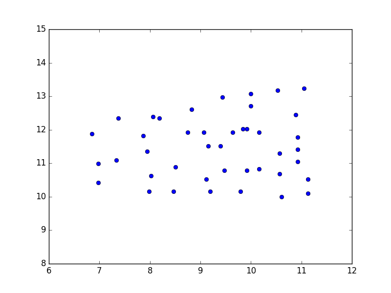
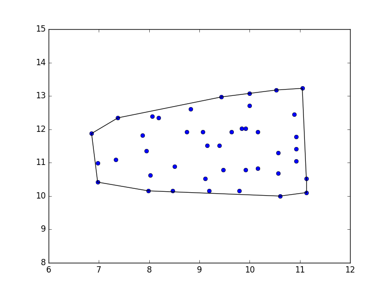
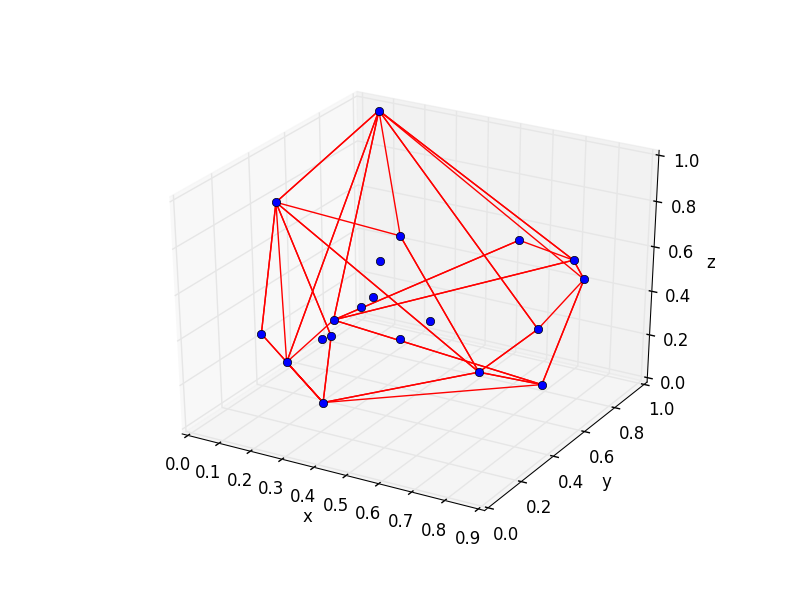
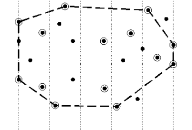
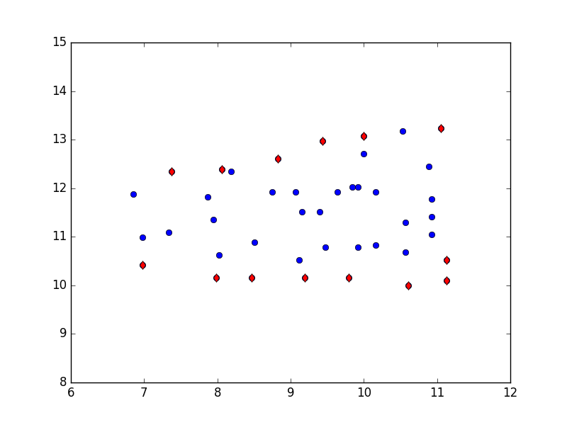
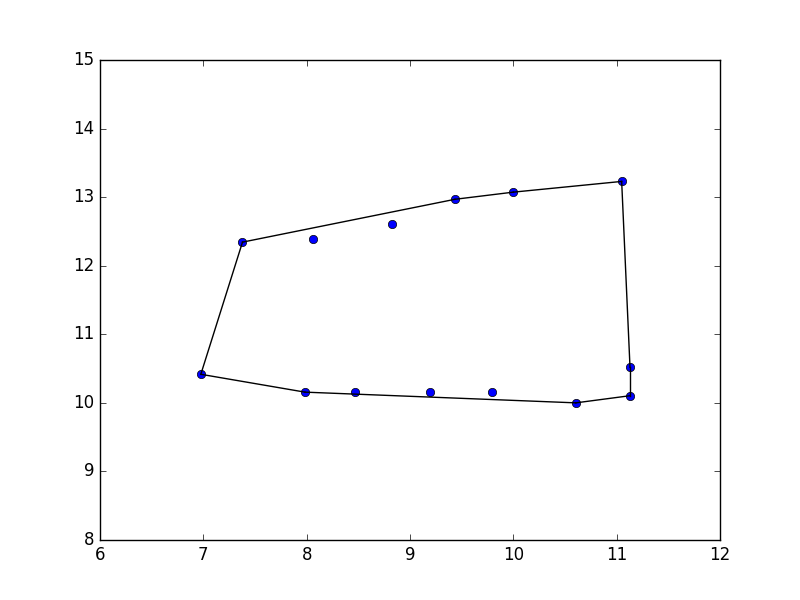
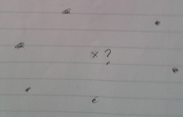
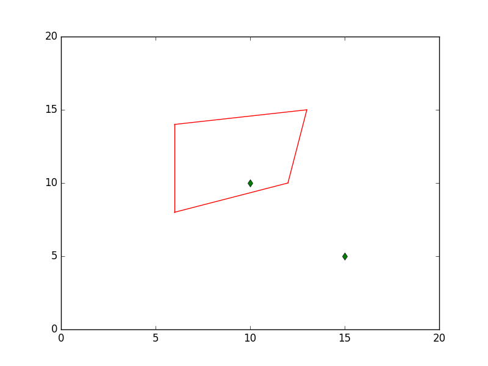
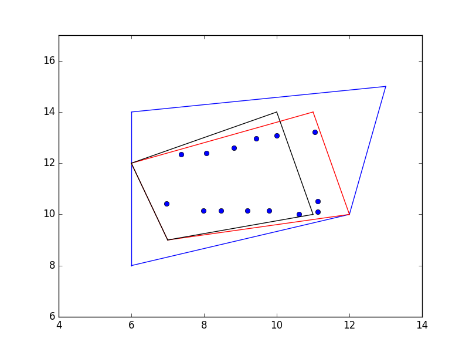

Verili herhangi bir boyuttaki bir nokta bulutunu düşünelim. Bu noktalar mesela bir yapay görüş uygulamasında bir görüntüsel bölgeyi (blob) temsil ediyor olabilir, ki gerçek dünyada o bölge bir obje olabilir. Ya da uzaklık ölçümü yapan algılayıcıdan kordinatlar aldık, bu kordinatlar arasındaki bir grubun etrafını tanımlayan sınırları bilmek istiyoruz. Bu bölgenin özellikle dışbükey olmasını istiyoruz.
Dışbükeylik özellikle istenen bir özellik, çünkü gerçek dünya objelerinin kabaca dış çeperleri dışbükey olmaya meyillidir. Ya da veri içinde dıştan izole, dışa kapalı bölgeler dışbükey gözükebilir. Bu bölgeleri bulmak ve dış hatlarını raporlamak faydalı.
Şöyle bir nokta bulutu olsun,
from scipy.spatial import ConvexHull
import pandas as pd
points = np.array(pd.read_csv('quadri.csv'))
plt.plot(points[:,0], points[:,1], 'o')
plt.xlim(6,12); plt.ylim(8,15)
plt.savefig('enc_09.png')

Bu noktaların dışbükey zarfını (convex hull) bulmak için pek çok algoritma
var. Mesela Quickhull [1], ya da Graham Scan adlı algoritmalar. Altta
scipy'in çağrısını kullanıyoruz, bu çağrı içinde [2] koduna çağrı
yapıyor, QHull Quickhull kullanıyor.
from scipy.spatial import ConvexHull
import pandas as pd
points = np.array(pd.read_csv('quadri.csv'))
hull = ConvexHull(points)
plt.plot(points[:,0], points[:,1], 'o')
for simplex in hull.simplices:
plt.plot(points[simplex, 0], points[simplex, 1], 'k-')
plt.xlim(6,12); plt.ylim(8,15)
plt.savefig('enc_01.png')

3 boyutlu bir veri için,
from scipy.spatial import ConvexHull
from mpl_toolkits.mplot3d import Axes3D
from scipy.spatial import ConvexHull
np.random.seed(2)
fig = plt.figure()
ax = fig.add_subplot(111, projection='3d')
points3 = np.random.rand(20,3)
hull = ConvexHull(points3)
edges= zip(*points3)
for i in hull.simplices:
plt.plot(points3[i,0], points3[i,1], points3[i,2], 'r-')
ax.plot(edges[0],edges[1],edges[2],'bo')
ax.set_xlabel('x')
ax.set_ylabel('y')
ax.set_zlabel('z')
plt.savefig('enc_08.png')

Sonuçlar üstte. Piyasadaki en iyi dışbükey zarf algoritmalarının algoritmik karmaşıklığı $O(n \log n)$ olarak biliniyor. Bu bazı uygulamalar için yavaş gelebilir, ayrıca çoğu uygulamanın kesin bir dış çeper bilgisine ihtiyacı yoktur, yaklaşık bir çeper, kabaca şeklin ne olduğunu bildiren bir algoritma da kabul edilir olabilir.
Yaklaşık olarak işleyen yaklaşımlardan biri [3, sf. 154]'de. Bu yaklaşıma göre veri noktalarında önce minimum $x$ ve maksimum $x$ değerleri bulunur (yani en sol ve en sağ uç noktalar), ardından bu noktalar arası dikey şeritlere bölünür.

Sonra algoritma solda sağa giderek her şerit içinde dikey en maksimum ve minimum iki noktayı bulur. Bu noktalar sırasıyla üst ve alt zarf noktaları olacaktır. Algoritma tamamlanınca bu minimal, maksimal noktalarının hepsini alıp üzerinde standart dışbükey zarf algoritmalarından birini işletiriz. Fakat eldeki noktaların sayısı artık oldukça azaldığı için algoritmanın tamamı çok hızlı çalışacaktır. Algoritmanın karmaşıklığı $O(N)$.
xmin = np.min(points[:,0])
xmax = np.max(points[:,1])
print xmin, xmax
bins = np.linspace(xmin,xmax,10)
bidx = np.digitize(points[:,0], bins)
mins = []; maxs = []
for idx in np.unique(bidx):
tmp=points[bidx==idx]
mins.append(tmp[np.argmin(points[bidx==idx,1])])
maxs.append(tmp[np.argmax(points[bidx==idx,1])])
mins=np.array(mins)
maxs=np.array(maxs)
6.85483870968 13.2291666667
plt.plot(points[:,0], points[:,1], 'o')
plt.plot(mins[:,0], mins[:,1], 'dr')
plt.plot(maxs[:,0], maxs[:,1], 'dr')
plt.xlim(6,12); plt.ylim(8,15)
plt.savefig('enc_02.png')

approx = np.vstack((mins,maxs))
hull = ConvexHull(approx)
plt.plot(approx[:,0], approx[:,1], 'o')
for simplex in hull.simplices:
plt.plot(approx[simplex, 0], approx[simplex, 1], 'k-')
plt.xlim(6,12); plt.ylim(8,15)
plt.savefig('enc_10.png')

Nokta, Bölge İçinde mi Dışında mı?
Diyelim ki 2 boyutta olmak üzere, elimizde dışbükey bir bölgeyi temsil eden noktalar var, ve elimizdeki bir başka noktanın bu bölge içinde mi dışında mı olduğunu merak ediyoruz. Bölgeyi tanımlayan analitik bir fonksiyon yok, mesela bir elips formülü gibi bir tanım olsaydı, direk herhangi bir kordinatı geçip $<1$, ya da $>1$ cevabını alabilirdik. Burada noktalar var, ama araları birleşik değil.

Çapraz çarpımla bu sorunu çözebiliriz [4]. Bir nokta bir vektörün sağında mı solunda mı sorusunun cevabını çapraz çarpımdan alabiliriz, tabii nokta vektör olarak gösterilebildiğine göre, bir vektör diğerinin sağında mı solunda mı sorusu.. Ama bunu da açalım, sağda olmak demek, "saat yönüne 180 dereceden az gitmek" demek. Neyse, sağda solda olmanın fark ettiğini biliyoruz, bir, sağ el kuralından, iki, $A \times B = -B \times A$. Tüm bu tanımlar tabii ki temelde gidip determinant kullanan hesaba bağlanıyor. Söylediklerimizin hepsi o tanım üzerinde test edilebilir, bkz [5].
O zaman çapraz çarpım bize sağda, solda olmayı söylüyorsa, şu hesabı yaparsak ne olur? Verili bir $x$ noktası ve bir kapalı bölge oluşturan $p_1,..,p_N$ var, biz her $i = 1,..,N$ için
$$ (x-p_i) \times (p_{i+1}-p_i) $$
hesabını yaparız (not bu hesap dışbükey bölgeler için işler). Bu hesap şu vektörleri baz alıyor,
$p_{i+1}-p_i$ kapalı bölgeyi çevreleyen vektörler, $x-p_i$ ise bölge noktasından içeride (ya da dışarıda) olan noktaya giden vektör. Eğer bir nokta bölge içindeyse 1-a, 2-b çapraz çarpımları hep aynı işaretli olmalı, yani $x$ her zaman 1'ın 2'nin, vs. sağında. Ama nokta dışarıda olsaydı,

1-a ile 2-b çapraz çarpımlarının işareti farklı mesela. Bunu kullanabiliriz, tüm çapraz çarpımları alıp sonuç vektöründeki tüm öğelerin aynı işarette olup olmadığını kontrol ederiz. Eğer öyle ise nokta içeridedir, yoksa dışarıda. Örnek kod ve bazı veriler üzerinde görelim.
import pandas as pd
from math import sqrt, fabs
def plot_line(pt1,pt2,color):
plt.plot(np.array([pt1[0],pt2[0]]),np.array([pt1[1],pt2[1]]),color=color)
def plot_quad(c,color='r'):
plot_line(c[1],c[0],color)
plot_line(c[2],c[1],color)
plot_line(c[3],c[2],color)
plot_line(c[0],c[3],color)
rect1 = [[6,8],[12,10],[13,15],[6,14]]
plot_quad(rect1)
plt.xlim(0,20); plt.ylim(0,20)
pt1 = np.array([10,10])
pt2 = np.array([15,5])
plt.plot(pt1[0],pt1[1],'gd')
plt.plot(pt2[0],pt2[1],'gd')
plt.savefig('enc_07.png')

İki nokta seçtik, biri kapalı 4 nokta içinde, diğeri dışında.
def same_sign(arr): return np.all(arr > 0) if arr[0] > 0 else np.all(arr < 0)
def inside_quad(rect, pt):
pts = np.array(rect)
a = pts - pt
d = np.zeros((4,2))
d[0,:] = pts[1,:]-pts[0,:]
d[1,:] = pts[2,:]-pts[1,:]
d[2,:] = pts[3,:]-pts[2,:]
d[3,:] = pts[0,:]-pts[3,:]
res = np.cross(a,d)
return same_sign(res), res
print inside_quad(rect1, pt1)
print inside_quad(rect1, pt2)
(True, array([ 4., 10., 32., 24.]))
(False, array([-36., -20., 72., 54.]))
Sonuç beklenen şekilde geldi.
Dış Geometrik Objenin İç Noktalara Uyum Skoru
Bazen önceden bilinen bir çokgenin (dörtgen, beşgen, vs.) onun içinde olan noktaları ne kadar iyi "kapsadığını" bir skor ile belirtmek gerekebilir. Mesela gürültülü bir nokta bulutundan yaklaşık dışbükey zarf çıkarttık, ve şimdi eldeki bir hipotez dörtgenin bu veriye ne kadar iyi uyduğunu bulmak istiyoruz.
Şöyle bir yaklaşım düşünülebilir. Her nokta için o noktanın kapsayan tüm kenarlara ne kadar uzak olduğunu ölçeriz, bunlar arasında minimum olan uzaklığı alırız. Eğer bir kenar bir noktanın yanındaysa onu kapsıyor demektir, ayrıca bir noktanın en yakınındaki kenar uzakta ise kapsama iyi değil demektir. Kenarlar dışına düşmek ne olacak? Bu durum noktanın içeride olup olmadığı sorusu ile halledilir, dışarı düşen noktalara cezalandırma amaçlı yapay yüksek bir uzaklık atanabilir. Ardından tüm bu minimum uzaklıklar toplanır ve genel bir skor ortaya çıkartılır.
def pdis(a, b, c):
t = b[0]-a[0], b[1]-a[1] # Vektor ab
dd = sqrt(t[0]**2+t[1]**2) # ab uzunlugu
t = t[0]/dd, t[1]/dd # ab birim vektoru
n = -t[1], t[0] # ab'ye normal birim vektor
ac = c[0]-a[0], c[1]-a[1] # vector ac
return fabs(ac[0]*n[0]+ac[1]*n[1]) # ac'nin n'e yansimasi (minimum uzaklik)
def score_quad_fit(c, pt):
arr = np.array([pdis(c[1],c[0],pt), pdis(c[2],c[1],pt), \
pdis(c[3],c[2],pt), pdis(c[0],c[3],pt) ])
i,tmp = inside_quad(c, pt)
if i==False: i=10.
return np.min(arr) * i
plt.plot(approx[:,0], approx[:,1], 'o')
rect1 = [[6,8],[12,10],[13,15],[6,14]]
plot_quad(rect1,'b')
r1total = np.array([score_quad_fit(rect1,p) for p in points]).sum()
rect2 = [[7,9],[12,10],[11,14],[6,12]]
plot_quad(rect2,'r')
r2total = np.array([score_quad_fit(rect2,p) for p in points]).sum()
rect3 = [[7,9],[11,10],[10,14],[6,12]]
plot_quad(rect3,'k')
r3total = np.array([score_quad_fit(rect3,p) for p in points]).sum()
print 'mavi',r1total
print 'kirmizi',r2total
print 'siyah',r3total
plt.xlim(4,14); plt.ylim(6,17)
plt.savefig('enc_11.png')
mavi 65.8765373106
kirmizi 36.3649774766
siyah 53.192955306

Üstteki çıktılara göre mavi renkli dörtgenin kapsaması en kötü, en iyisi kırmızı olan. Daha küçük siyah dörtgen de fena kapsamıyor fakat bu dörtgen sağdaki bazı noktaları dışarıda bırakmış. Bu noktalar rutinimiz tarafından 10 skor ile cezalandırılıyor.
Kaynaklar
[1] Barber, The Quickhull Algorithm for Convex Hulls
[2] The Geometry Center Home Page, QHull, http://www.qhull.org
[3] Preparata, Computational Geometry An Introduction
[4] Mathematics Stack Exchange, Determine If 2D Pixel Inside a Region Without Formula,http://math.stackexchange.com/questions/1956626/determine-if-2d-pixel-inside-a-region-without-formula
[5] Bayramli, Çok Değişkenli Calculus, Ders 3